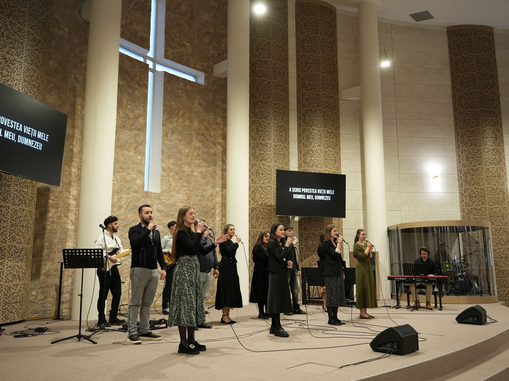
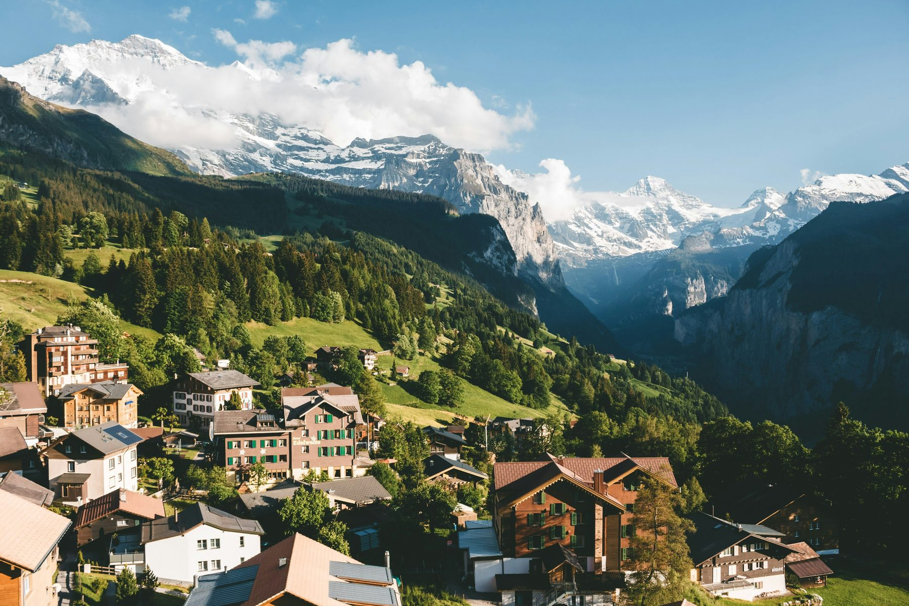

„Căci Dumnezeu nu ne-a dat un duh de frică, ci de putere, de dragoste și de chibzuință." 2 Timotei 1:7 · VDC
Descoperă multitudinea de activități prin care Asociația Amedeo aduce iubirea lui Dumnezeu în comunitate.
„O comunitate unită prin credință, dragoste și dorința de a servi."
Asociația Creștină Amedeo a luat naștere din dorința sinceră de a trăi și a împărtăși iubirea lui Dumnezeu. Suntem o comunitate deschisă, activă și dedicată, cu sediul în Peştiş, Aleșd, România.
Prin multiple domenii de activitate — de la evanghelizare și tabere, până la studio de înregistrări și studiu biblic — căutăm să fim relevanți, autentici și ancorați în Cuvântul lui Dumnezeu.
Evenimente și activități evangelice prin care ducem vestea bună mai departe, cu dragoste și autenticitate.
Cum ducem mai departe vestea bună a Evangheliei.
Organizăm evenimente evangelice deschise comunității, cu muzică, mărturii și mesajul Evangheliei prezentate cu claritate și căldură.
Înainte de fiecare activitate evangelică, ne pregătim prin rugăciune, credând că Duhul Sfânt este cel care lucrează cu adevărat în inimi.
Nu reușim să ne ocupăm de toți cei care interacționează cu noi, dar însoțim cu drag pe cei care doresc să se implice în lucrarea asociației.
Adaugă aici fotografii de la evenimentele de evanghelizare.
Momente de refacere, bucurie și comuniune autentică în mijlocul naturii și al fraților.
Activitățile prin care construim relații și ne bucurăm împreună.
Activități în aer liber care aduc comunitatea împreună și oferă ocazia de a admira creația lui Dumnezeu.
Întâlniri informale cu muzică, mâncare și conversații care adâncesc prietenia și legăturile din comunitate.
Seri în jurul focului cu cântece de laudă, mărturii și liniștea naturii — momente neuitate care unesc inimile.
Activități sportive și recreative care promovează sănătatea, echipa și spiritul de comunitate.
Adaugă aici fotografii de la activitățile de recreere.

Două perioade pe an — tabăra de vară și tabăra de iarnă — organizate în inima Elveției, cu credință, prietenie și formare spirituală.
Organizate în Elveția — alpii eternii, comunitatea autentică și timpul cu Dumnezeu.
Drumeții montane, jocuri în aer liber, focuri de tabără sub stelele alpine și seri de adorare — în iulie / august.
Ski, săniuș, seri în jurul șemineului cu studiu biblic și momente de liniște în zăpada Alpilor — în decembrie / ianuarie.
Dimensiunile unei experiențe care marchează pe viață.
Studiu biblic, rugăciune și momente de adorare care formează caracterul și adâncesc credința participanților.
Prietenii formate la tabere rămân pe viață. Creăm un mediu sigur, deschis și plin de căldură pentru toți participanții.
Locația din Elveția oferă peisaje spectaculoase, aer curat și un cadru perfect pentru reflecție și conectare cu Dumnezeu.
Adaugă aici fotografii din tabere.
Sprijinim bisericile mici cu prezență, ajutor practic și mărturie vie a credinței.
Direcțiile în care ne implicăm pentru a aduce schimbare reală.
Sprijinim bisericile mici cu puțini membri, în locuri mai defavorizate care au nevoie de o reîmprospătare spirituală.
Suntem prezenți acolo unde e nevoie — în cartiere, sate și comunități cu puțin acces la mesajul credinței.
Adaugă aici fotografii de la misiuni.
Asociația Amedeo crește — național și internațional — prin filiale care duc același spirit mai departe.
Sediul central al asociației, locul de unde pornesc toate inițiativele și unde se coordonează întreaga activitate a grupului Amedeo.
O comunitate în creștere în județul Tulcea, cu același ADN al iubirii și slujirii din grupul Amedeo.
Prezența internațională a asociației, conectând diaspora românească cu valorile și activitățile grupului Amedeo.
Studio de înregistrări profesional — proiect propriu al asociației, deschis acum și colaborărilor externe.
Producție audio profesională cu inimă creștină.
Muzică de laudă, predici înregistrate și conținut audio al asociației — produse cu profesionalism și dedicare.
Deschidem studioul pentru artiști, formații și organizații care doresc să înregistreze proiecte muzicale de calitate.
Studio echipat pentru înregistrare, mixare și mastering, capabil să producă material audio de calitate profesională.
Adaugă aici fotografii din studio.
Contactează-ne pentru detalii despre disponibilitate, sesiuni de înregistrare și colaborări.
Studii biblice online pe YouTube, cu acces extins pentru membrii comunității Amedeo.
Cum studiem împreună Cuvântul lui Dumnezeu.
Studiile biblice publice sunt disponibile pe canalul YouTube al asociației, accesibile oricui dorește să studieze Cuvântul.
Membrii comunității au acces la studii biblice aprofundate, sesiuni de întrebări și discuții în grup restrâns.
Studiile sunt organizate regulat, cu teme structurate care acoperă atât Vechiul cât și Noul Testament.
Alătură-te comunității Amedeo și primești acces la toate resursele biblice disponibile membrilor.
Devino parte din familia Amedeo. Spune-ne cine ești și cum poți contribui cu talentele tale.
Am primit cererea ta. Cineva din echipa Amedeo te va contacta în curând. Dumnezeu să te binecuvânteze!